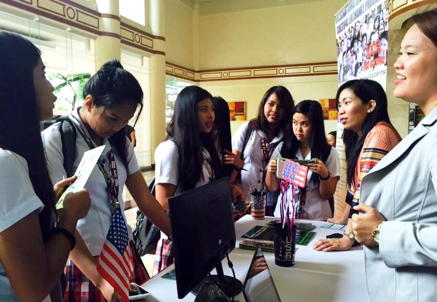

UPH is now accepting Enrollment Reservations for AY 2021-2022.
Only those who got High Passed, Passed, and Conditional remarks in the Online Entrance Examination can apply for reservation.
Just follow the steps below.
Step 1. Click the link https://uphsl.edu.ph/online_payment/guest.php
Step 2. Select "MANILA" campus then click submit
Step 3. For payment description please type "Reservation Fee – (College, Senior High School, Junior High School)
Step 4. Fill up “amount” (minimum of Php500.00 non-refundable but deductible from your school fee), “email address” and “name” then click "pay now"
Step 5. Select "Payment option" then click "Agree" button
Step 6. Click the "Send Instruction via email"
Step 7. Open your email address and look for "Dragon pay" then click the link for Online payment instruction.
Step 8. After payment, send proof of payment to perpetual@gmail.com for verification.
Step 9. Once confirmed, email will be sent to you on how to register.
Step 10. Confirmation of your reservation will be sent thru the email provided in your application form.
For Onsite payment, please proceed to Assessment Office located at 2nd floor UPH Main Building.
Welcome, Perpetualites!

Why Choose Perpetual?
Quality of Education Program.
The University of Perpetual Help has been providing quality education for the past
45 years by continuously enhancing its academic programs as it paves the journey of tomorrow’s leaders. Students are surrounded by an environment that encourages proficiency in their chosen fields.
As a result, the University boasts of board topnotchers and graduates who excel in their chosen careers.
As proof of Perpetual Help’s investments on standardizing and internationalizing its curricula, the University has received several awards from the Philippine Association of Colleges and Universities Commission on Accreditation (PACUCOA) in recognition of its excellence in education.
Highly Competent and Caring Faculty and Administrators
From justices to admirals, our faculty is a diverse group of educators, professors, industry professionals, and prominent personalities in the country. They are not just teachers but also mentors and consultants who nurture students to develop their full potential.
Modern Equipment and facilities
The University continually updates its modern facilities and equipment to prepare students with the required skills for evolving industry needs.
Local and International Affiliations
The University has established local and international linkages with prestigious institutions to further enhance the skills, competencies, and professional network of our globally competitive students to help them jumpstart their careers here and abroad.
Convenient Locations
Our campuses in Las Piñas, Molino, and Calamba are strategically located along major thoroughfares in their respective cities which makes them accessible to all types of transportation and convenient for students, parents, and faculty.
Vibrant Social Community
The Perpetual community offers plenty of experiences beyond what take place solely in a classroom. Students can choose from a number of school organizations that address a varied range of interests. Whether it’s getting involved with the Students Council, performing with the Perpetual Street Dance, or playing basketball with the Perpetual Altas, campus life at Perpetual Help has something for everyone.